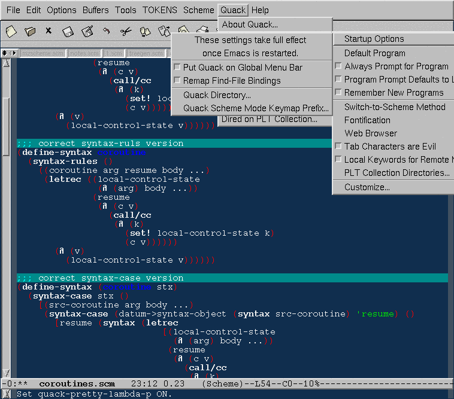

我给 cmuscheme.el 加入了执行命令时，自动起动 scheme 解释器， 自动显示 scheme buffer 在另一个窗口的功能。加入了 scheme-send-line 函数，并且绑定到 C-c C-c。只需要把下面这些 加入 .emacs:
(defun wy-scheme-mode-hook ()
(defun scheme-send-region (start end)
"Send the current region to the inferior Scheme process."
(interactive "r")
(let ((origbuffer (current-buffer))
(proc (get-buffer-process (if (eq major-mode 'inferior-scheme-mode)
(current-buffer)
scheme-buffer))))
(or proc
(progn
(run-scheme scheme-program-name)
(pop-to-buffer (process-buffer (scheme-proc)) t)
(goto-char (point-max))
(pop-to-buffer origbuffer))))
(comint-send-region (scheme-proc) start end)
(comint-send-string (scheme-proc) "\n")
(scheme-display-buffer))
)
(add-hook 'scheme-mode-hook 'wy-scheme-mode-hook)
(defun scheme-display-buffer ()
"Display the inferior-maxima-process buffer so the recent output is visible."
(interactive)
(let ((origbuffer (current-buffer)))
(pop-to-buffer (process-buffer (scheme-proc)) t)
(goto-char (point-max))
(pop-to-buffer origbuffer)))
(defun scheme-send-line ()
"Send the line to the inferior Scheme process."
(interactive)
(scheme-send-region
(save-excursion
(beginning-of-line) (point))
(save-excursion
(progn (end-of-line) (point)))))
(define-key scheme-mode-map (kbd "C-c C-c")
'scheme-send-line)
每次 C-c e 送出一行的时候，会向 scheme 进程输出两个换行符号。 不过这个问题暂时可以忍受 :P
